OILERS
| Photo |
Name |
Number |
Position |
Shot |
Height |
Weight |
Birthday |
Hometown |
| 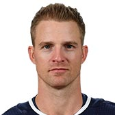 |
Kyle Brodziak |
28 |
C |
R |
6' 2" |
205 |
May 25, 1984 |
St. Paul, AB, CAN |
|
Alex Chiasson |
39 |
RW |
R |
6' 4" |
208 |
Oct 1, 1990 |
Montreal, QC, CAN |
|
Leon Draisaitl |
29 |
C |
L |
6' 2" |
208 |
Oct 27, 1995 |
Cologne, DEU |
 |
Joseph Gambardella |
45 |
C |
L |
5' 10" |
196 |
Dec 01, 1993 |
Staten Island, NY, USA |
| 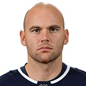 |
Zack Kassian |
44 |
RW |
R |
6' 3" |
211 |
Jan 24, 1991 |
Windsor, ON, CAN |
|
Jujhar Khaira |
16 |
LW |
L |
6' 4" |
212 |
Aug 13, 1994 |
Surrey, BC, CAN |
| 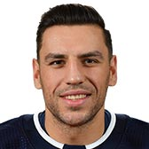 |
Milan Lucic |
27 |
LW |
L |
6' 3" |
231 |
Jun 7, 1988 |
Vancouver, BC, CAN |
| 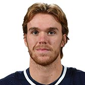 |
Connor McDavid |
97 |
C |
L |
6' 1" |
193 |
Jan 13, 1997 |
Richmond Hill, ON, CAN |
| 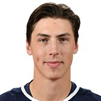 |
Ryan Nugent-Hopkins |
93 |
C |
L |
6' 0" |
184 |
Apr 12, 1993 |
Burnaby, BC, CAN |
| 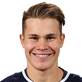 |
Jesse Puljujarvi |
98 |
RW |
R |
6' 4" |
201 |
May 7, 1998 |
Alvkarleby, SWE |
| 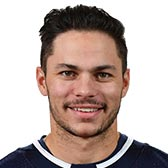 |
Ty Rattie |
8 |
RW |
R |
6' 0" |
183 |
Feb 5, 1993 |
Calgary, AB, CAN |
| 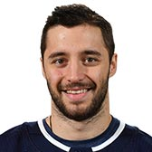 |
Tobias Rieder |
22 |
RW |
L |
5' 11" |
186 |
Jan 10, 1993 |
Landshut, DEU |
| 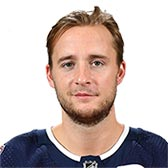 |
Ryan Spooner |
23 |
C |
L |
5' 11" |
191 |
Jan 30, 1992 |
Ottawa, ON, CAN |
| 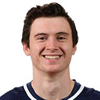 |
Kailer Yamamoto |
56 |
RW |
R |
5' 8" |
153 |
Sep 29, 1998 |
Spokane, WA, USA |
| Photo |
Name |
Number |
Shot |
Height |
Weight |
Birthday |
Hometown |
| 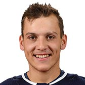 |
Matt Benning |
83 |
R |
6' 1" |
203 |
May 25, 1994 |
Edmonton, AB, CAN |
| 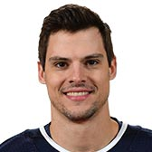 |
Kevin Gravel |
4 |
L |
6' 4" |
211 |
Mar 06, 1992 |
Kingsford, MI, USA |
| 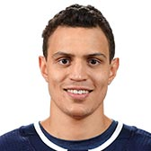 |
Caleb Jones |
82 |
L |
6' 1" |
194 |
Jul 6, 1997 |
Arlington, TX, USA |
|
Oscar Klefbom |
77 |
L |
6' 3" |
216 |
Jul 20, 1993 |
Karlstad, SWE |
|
Adam Larsson |
6 |
R |
6' 3" |
208 |
Nov 12, 1992 |
Skellefteå, SWE |
| 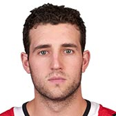 |
Brandon Manning |
26 |
L |
6' 1" |
205 |
Jun 04, 1990 |
Prince George, BC, CAN |
| 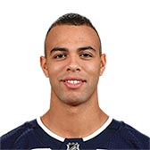 |
Darnell Nurse |
25 |
L |
6' 4" |
221 |
Feb 4, 1995 |
Hamilton, ON, CAN |
| 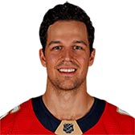 |
Alexander Petrovic |
15 |
R |
6' 4" |
216 |
Mar 03, 1992 |
Edmonton, AB, CAN |
| 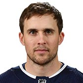 |
Kris Russell |
4 |
L |
5' 10" |
170 |
May 2, 1987 |
Caroline, AB, CAN |
| 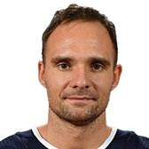 |
Andrej Sekera |
2 |
L |
6' 0" |
200 |
Jun 8, 1986 |
Bojnice, SVK |
| Photo |
Name |
Number |
Height |
Weight |
Birthday |
Hometown |
|
Mikko Koskinen |
19 |
6' 7" |
202 |
Jul 18, 1988 |
Vantaa, FIN |
|
Cam Talbot |
33 |
6' 4" |
196 |
Jul 5, 1987 |
Caledonia, ON, CAN |